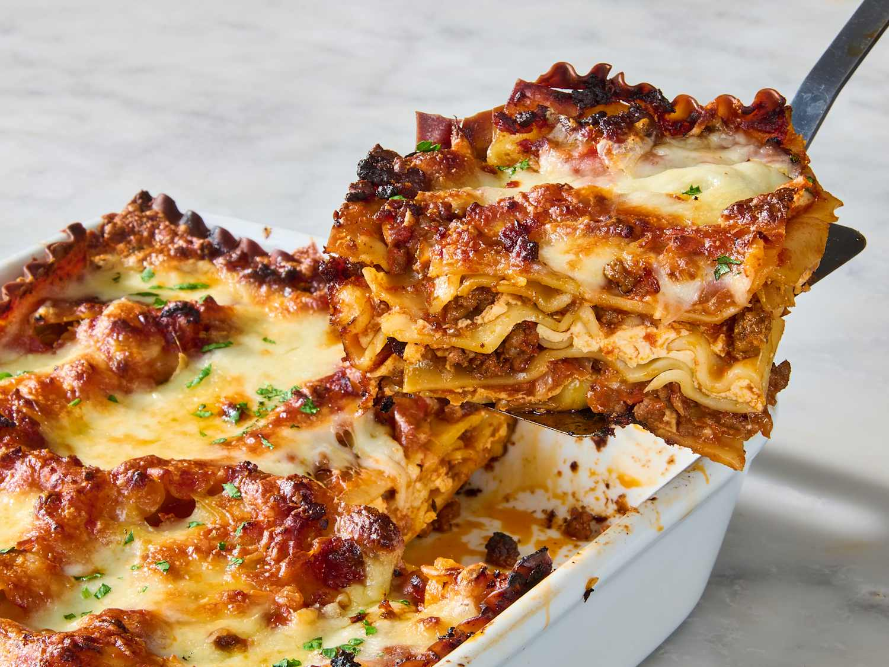

Lasagna
Home

Prep Time - 30 mins / Cook Time - 2 hours / Serves 6
Description
A delicious and easy lasagna. See the ingredients list and directions to make this below:
Ingredients
- 750g beef mince
- 800g passata
- 200ml beef stick
- 300g lasagne sheets
- 500g white sauce
- 125g mozzarella
Step-By-Step Directions
- To make the meat sauce, heat 2 tbsp olive oil in a frying pan and cook 750g lean beef mince in two batches for about 10 mins until browned all over.
- Pour over 800g passata and 200ml hot beef stock.
- Bring up to the boil, then simmer for 30 mins until the sauce looks rich.
- Heat the oven to 180C/160C fan/gas 4 and lightly oil an ovenproof dish (about 30 x 20cm).
- Spoon one third of the meat sauce into the dish, then cover with some fresh lasagne sheets from a 300g pack. Drizzle over roughly 130g ready-made or homemade white sauce.
- Repeat until you have three layers of pasta. Cover with the remaining white sauce, making sure you can't see any pasta poking through.
- Scatter 125g torn mozzarella over the top.
- Bake for 45 mins until the top is bubbling and lightly browned.
- Enjoy!